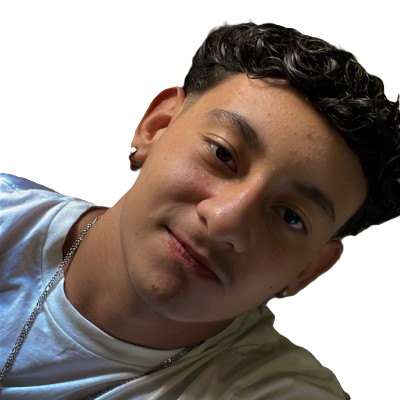
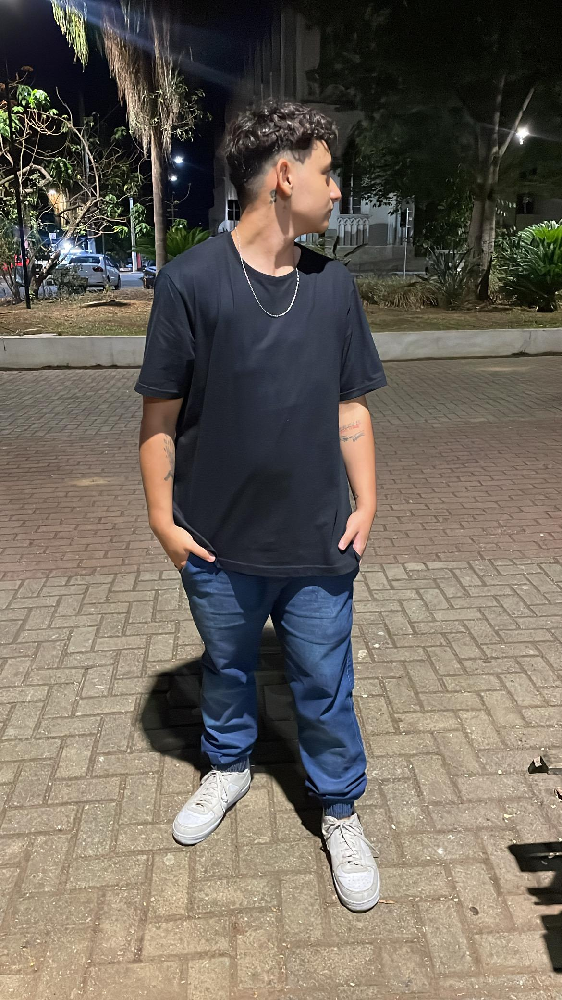

A TECNOLOGIA AO LADO DA HISTÓRIA
Criatividade e inovação andam juntas. Uma combinação de conhecimento, ambição, um impacto funcional e intuitivo para resultados surpreendentes e contribuir diretamente para o sucesso total da sua empresa. Estou pronto para fazer história nos seus sonhos, mostrando as infinitas possibilidades que o mundo nos oferece com a tecnologia.

MINHAS ESPECIALIDADES
Habilidades
Hard-skills: HTML, CSS, Bootstrap, MySQL, PHP, JavaScript,Node.js, Flask, GitHub, Sublime, VSCode;
Soft-skills: Proativo, Criativo, Trabalho em equipe, Responsável, Pontual, Resiliente;
Projetos
TCC (Trabalho de Conclusão de Curso): Atuei como desenvolvedor back-end no layout de uma página de cafeteria, onde, utilizamos o Adobe llustrator para design, e, no back-end utilizamos HTML e CSS para dar estrutura ao código e também para gerar responsividade com o front-end;
API (Aprendizagem de Projeto Integrado): Atuando na equipe de desenvolvimento, fizemos um site com resultados de Exportação e Importação dos municípios e estados de São Paulo, utilizando CSS, HTML, MySQL, Flask e Python, para estrtura do back-end que seja de total responsividade com o front-end e seus gráficos, onde utilizamos o Figma e Charts.js para geração dos gráficos, que também, deve ser de total responsividade com o back-end;
Github API: KernelPanic
Sobre
Meu nome é Lucas Prado, tenho 19 anos, sou fissurado em tecnologia, arte, arquelogia e tatuagens. Com um equilíbrio de paixão por natureza e músicas antigas. Pontual, responsável, proativo e criativo, pronto para sempre inovar e mostrar que a tecnologia é infinita e anda ao lado de tudo.
Basta você acreditar na mudança, de que ela é real e totalmente alcançável. Quero te mostrar o quanto ela pode nos ajudar a desvendar inúmeros mistérios que até nunca se soube sobre eles, mesmo estando a pouco tempo no mercado, sou adepto a ambientes desafiadores, que agreguem no meu crescimento profissional e pessoal, contribuindo diretamente tanto ao sucesso da empresa como no meu pessoal também se trabalharmos em equipe.

MUITO PRAZER, SOU LUCAS PRADO
Estudante de Desenvolvimento de Software e Multiplataformas, com curso técnico em Análise e Desenvolvimento de Sistemas, Lógica de Programação e Tecnologia da Informação e Comunicação. Desenvolvedor Full Stack em linguagens de programação, frameworks e banco de dados.
Proativo, criativo, pontual, responsável, persistente e trabalho em equipe, estou pronto para contribuir diretamente com o sucesso da sua empresa, trazendo crescimento tanto profissional quanto pessoal, juntos com a tecnologia e suas infinitas possibilidades, podemos mudar o mundo.